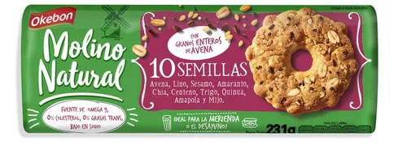

👉 Trabajo 04 - Uso de tablas
Araneda Nahiara
¿Cuál es la etiqueta principal utilizada para crear una tabla en HTML?
La etiqueta principal utilizada para crear una tabla en HTML estable. Esta etiqueta se utiliza para definir el
inicio de una tabla y
encerrar todas las filas y celdas que la componen.
¿Qué etiqueta se utiliza para definir una fila en una tabla
En HTML, la etiqueta utilizada para definir una fila en una tabla es tr. Esta etiqueta se utiliza para crear
una nueva fila dentro de un elemento table.
¿Cuál es la etiqueta utilizada para crear una celda de encabezado en una tabla?
La etiqueta utilizada para crear una celda de encabezado en una tabla es th. Esta etiqueta se utiliza para
definir celdas que contienen encabezados de columna o fila en una tabla.
¿Cuál es la etiqueta utilizada para crear una celda de datos en una tabla?
La etiqueta utilizada para crear una celda de datos en una tabla es td. Esta etiqueta se utiliza para definir
celdas que contienen datos en una tabla HTML.
¿Qué atributo se utiliza para especificar cuántas columnas debe abarcar una celda?
Se utiliza el atributo headers
¿Qué atributo se utiliza para especificar cuántas filas debe abarcar una celda?
el atributo que se utiliza es align
Si necesitamos crear una tabla con 10 filas ¿qué etiqueta y cuántas veces se debe utilizar para definir las
filas?
La etiqueta es tr y se debe utilizar 10 veces.
| Nombre |
Calorias |
Tipo |
Imagen |
| Leche |
42 Calorias |
Lacteo |
|
| Galletitas |
54 Calorias |
Snack |
 |
| Frutos Rojos |
57 Calorias |
Frutas |
|
| Vodka |
231 Calorias |
Bebida |
|
| Hamburguesa |
295 Calorias |
Comida |
 |
| Pos. |
Número |
Piloto |
Marca |
Vueltas |
Tiempo |
Diferencia |
| 1° |
231 |
Urcera,José Manuel |
 |
25 |
39:28.539 |
|
| 2° |
121 |
Craparo,Elio |
 |
25 |
39:29.740 |
1.201 |
| 3° |
4 |
Catellano,Jonatan |
|
25 |
39:31.206 |
2.667 |
| 4° |
96 |
Benvenuti,Juan cruz |
 |
25 |
39:33.118 |
4.579 |
| 5° |
10 |
Aguirre,Valentin |
|
25 |
39:33.764 |
5.225 |
| 6° |
19 |
Ciantinni,Diego |
|
25 |
39:37.838 |
9.299 |